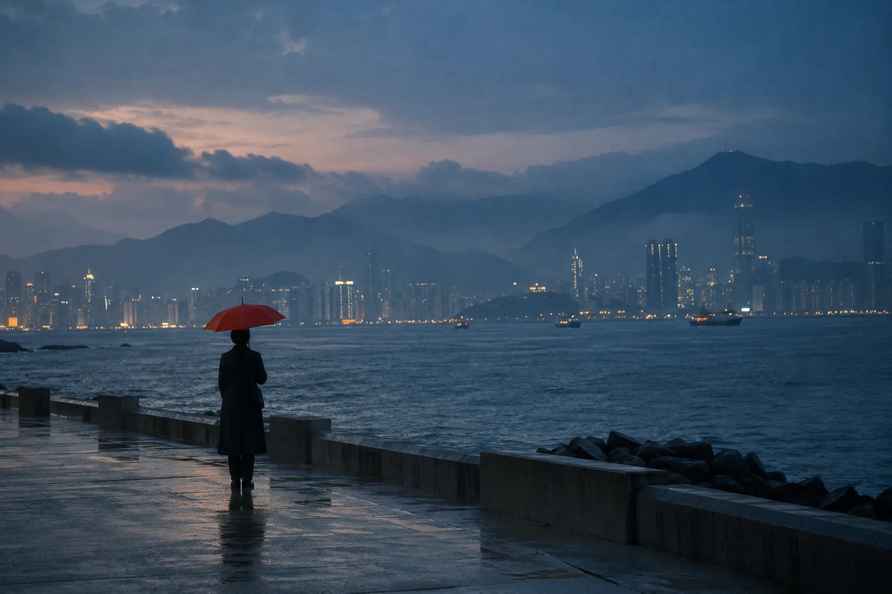
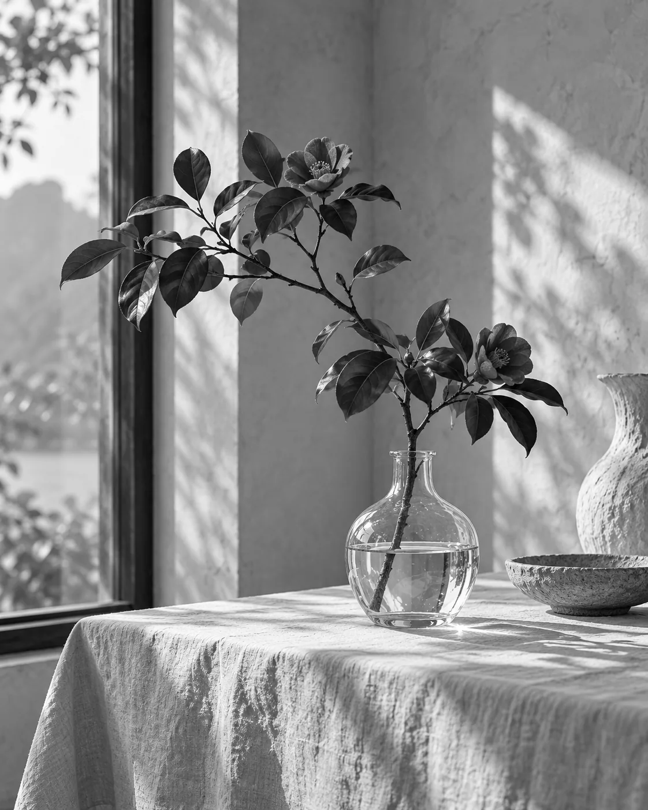
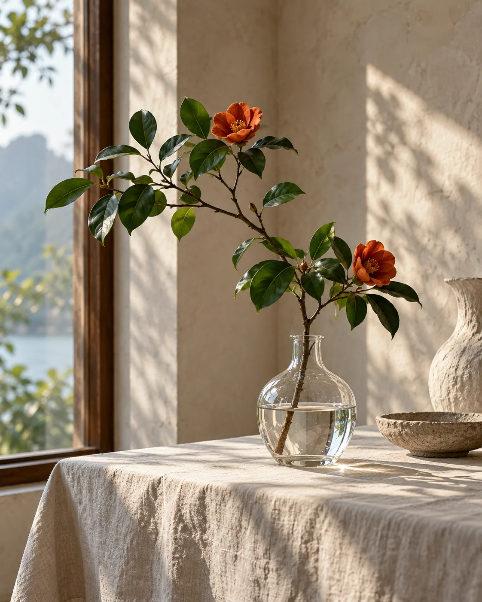
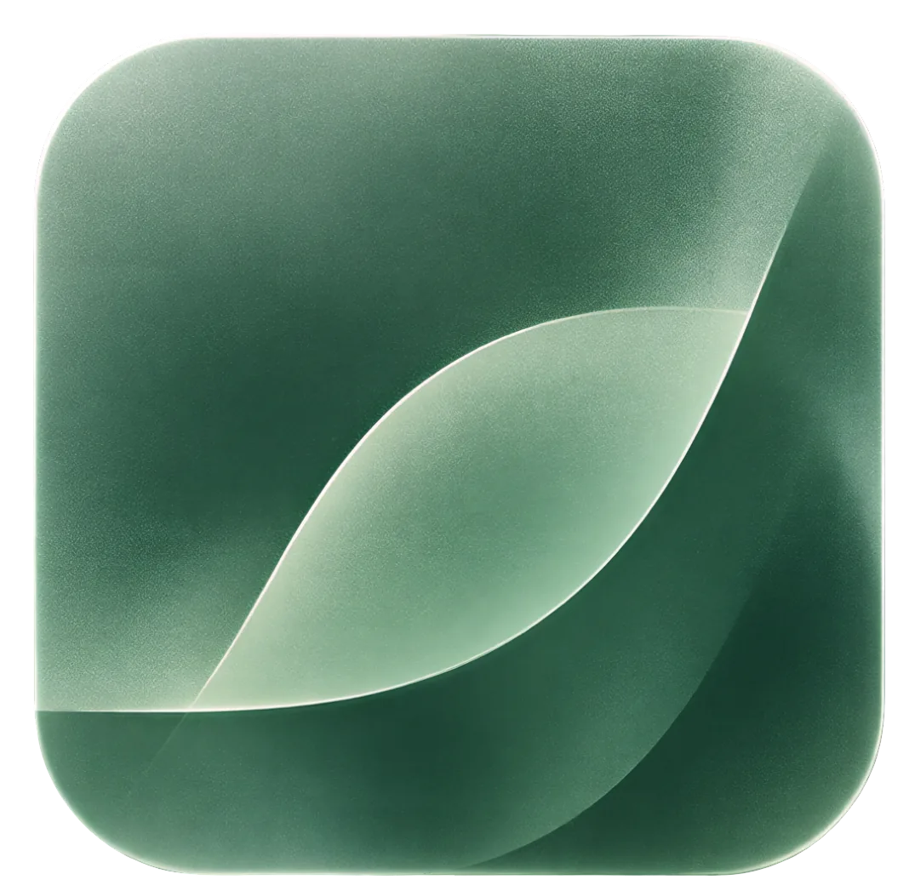

PIANYU片屿 · Android 照片创作应用

把照片变成作品。
从颜色、排版到署名。
一张照片，
不止一种表达。
片屿把局部留彩、相机画幅、拼图、签名水印与色彩取样放在同一间移动工作室。以下是用演示照片制作的效果示意。
留下这一点颜色。
先让整张照片回到黑白，再将你想强调的部分还原成原色。


让视线，
停在这里。
拖动照片里的彩色区域。你也可以试试不同形状，调整它的大小。
应用中还可以双指缩放、调整圆角，并按原图分辨率保存。
把瞬间
排成画面。
自由拼图：2–9 张照片，选择布局、比例与间距，再逐张裁切、替换或旋转。
示例排版 · 三张照片，三种视角
给作品一个
自己的落款。
手写、提取或管理透明签名预设，让署名自然地留在画面上。多张照片也能一起处理。
把一张照片的
颜色带走。
提取 4–6 种代表色，做成带圆形色块与 HEX 色号的取样卡。可选择比例，也可加入签名。
示意色值，根据展示照片人工选取；应用内由照片取样生成。
一间装在口袋里的
照片工作室。
从导入照片，到调整细节，再到保存作品，四种创作方式沿用同一套操作语言。图片在本机处理，原图保留，作品另行保存。
由 Sakuya_Jack 开发。支持 Android 8.0 及以上系统；创意编辑以原图分辨率导出，JPEG 编码质量约 80%。
查看开源项目
下一张作品，
从这里开始。
下载 Pianyu Studio，试试新的相机画幅，让照片和相机留在同一张作品里。
v0.3.0-preview · 约 20 MB · Android 8.0+ · Debug 签名